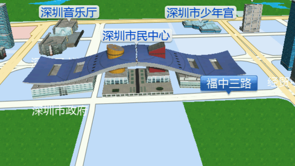

凯立德2020冬季地图数据更新说明
凯立德3N2版本导航电子地图在3M2版的基础上，进行了大范围的更新、维护，更新维护道路里程约58万公里，新增道路约32万公里；更新维护的POI超过37万，新增POI约89万，涉及全国21个省、自治区、直辖市。
提升了数据的准确性和保证了数据的现势性。
-
更新范围涉及21个省、自治区、直辖市
-
更新维护道路里程约58万公里
-
新增道路约32万公里
-
更新维护POI超过37万
-
新增POI约89万
高精度三维建筑模型与高清路口实景图
-
关键POI三维建筑模型将现实中地标建筑物进行等比建模，在普通建筑物框架模型的基础上，精细3D模型与高清贴图，能更形象地展示关键性POI（地图兴趣点），帮助驾驶者辨别目的地与行驶方向，也极大提高导航显示效果。
-
实景路口放大图对复杂岔路口、高架与高速进出口、城市主道路与辅路连接口等驾驶者容易错行的路段，通过高清放大、关键信息聚焦绘制的导航指引图片。电子地图导航技术发展以来，实景路口图一直是导航技术中最高效的指引方法。
地图升级服务
-
寄卡升级
-
网页升级
-
自助升级